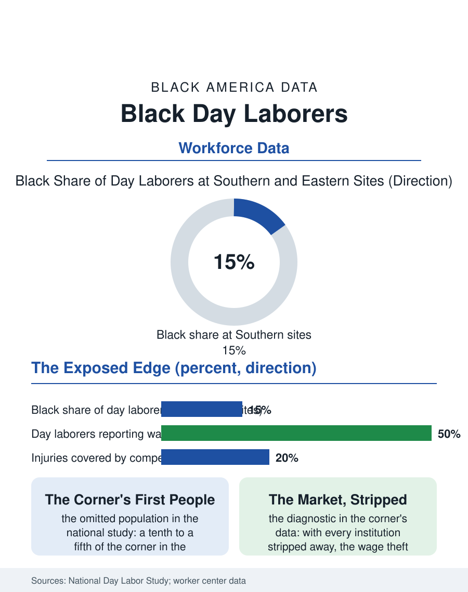

Black Employment
The Morning Line: Black Day Laborers
The shape-up's Black veterans stand in the same morning line as the newcomers, at the market's stripped edge where theft and injury show their true rates. The day labor file.

Day labor, the hiring corner and the early morning shape-up, is the labor market's most exposed edge, and its workforce, popularly pictured as exclusively immigrant, includes a substantial Black contingent, the native-born men of the corner and the van, whose presence the workforce studies document and the public picture omits. This article reads the day labor file.
The Corner's Two Populations
The national day labor study, the field's foundational survey conducted at the hiring sites themselves, found the workforce roughly four fifths Latino immigrant and, in the Southern and Eastern sites, a Black share the regional data place between a tenth and a fifth, the native-born workers of the cities where the corner tradition predates the immigration era's, the shape-up having been the Black longshoreman's and the construction laborer's hiring form for a century before it was the newcomer's. The work itself is the casual economy's residue: the moving van and the demolition site, the landscaping surge and the storm cleanup, the homeowner's Saturday project and the contractor's short crew, hired by the day at the wage the corner's morning negotiation sets, in cash, without the record the tax and injury systems require to see the work at all. The wage theft file is the corner's standing grievance in the study's data: a large share of day laborers report the unpaid day, the shorted hours, the vanished contractor, with the recovery machinery, the small claim and the worker center's delegation, recovering a fraction, and the injury file is worse, the day's hazard borne by the worker whose employer of the morning is a stranger by the afternoon, the compensation system's door closed by the arrangement's design. The hall's ledger, where it exists, is the corner's first written record.
Storms and the Surge
The disaster economy is the corner's harvest and its scandal in one: the hurricane and the flood send the reconstruction demand surging into exactly the labor the corner supplies, and the post-storm investigations, from Katrina's Gulf forward, document the wage theft and the toxic exposures of the cleanup workforce at scales that produced their own reform literature, the Black cleanup worker of the Gulf parishes and the immigrant crew imported to the same streets forming the surge's two tiers. The worker centers are the file's institutional answer, the hiring halls that took the corner indoors in the cities that built them, setting the wage floor, the safety training, and the theft recovery as the hall's services, their counts in the hundreds nationally, their Black membership in the Southern centers substantial, the hall being, in form, the union hiring hall the shape-up's history always promised and the casual market never built. The municipal file completes the picture: the corner's legality, the solicitation ordinances and their constitutional litigation, and the day laborer centers' zoning fights, compose a local politics in which the workforce's visibility is the issue, the work being welcomed and its workers' gathering resented in the same neighborhoods' testimony.
The Market's Edge as a Mirror
The day labor file closes on the corner's diagnostic value, because the shape-up is the labor market with its institutions stripped away, the wage discovered by the morning's supply and demand in public, and its data therefore show what the formal market's floors and records conceal: the wage the unrecorded work actually clears at, the theft rate the unprotected worker actually bears, the injury's true address. The Black corner worker's presence in that data corrects the picture the immigration frame imposes, the native-born casualty of the formal market's exclusions, the record and the background check and the license files' outputs, standing in the same morning line as the newcomer, the two histories converging at the market's edge where the papers, of both kinds, run out. The studies count the nation's day laborers in the low hundreds of thousands on a given morning. The file's last entry is the line itself at six, the coffee and the cold, the vans slowing, the foreman's finger pointing the day's chosen out of the line in the gesture the longshore's grandfathers knew, the market's oldest hiring technology still running because the work at its end is real and the institutions above it have not yet reached all the way down.
More in Black Employment
The Black Unemployment Rate: The Two-to-One Pattern
Black unemployment runs at roughly twice the White rate — 5.5 percent against 3.3 percent in annual averages — a ratio stable across five decades of federal data. How it is measured and why it persists.
Black Median Weekly Earnings: The 80-Cent Ratio
Black full-time workers earn a median of about $900 a week — roughly 80 cents for every dollar White workers earn. The BLS earnings data by group, gender, and occupation.
Black Labor Force Participation: Working at National Rates
Black labor force participation runs at roughly the national rate — and Black women participate at higher rates than White women. The BLS participation data.
Source: National Day Laborer Organizing Network and UCLA National Day Labor Study; worker center and post-disaster labor investigations.